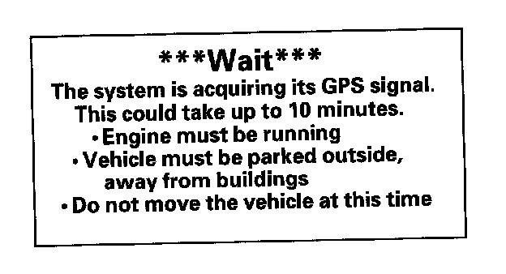
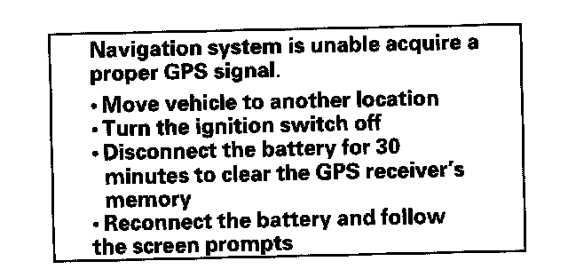

Reading and Clearing Diagnostic Trouble Codes
Navigation SystemGeneral Troubleshooting Information
General Operation
Refer to the Honda Navigation System Owner's manual, for the navigation system operating procedures.
Anti-theft Feature
The navigation system has a coded theft protection circuit. Be sure you have the customer's anti-theft security code before;
- Disconnecting the battery
- Disconnecting the navigation unit 12P and 17P connector
- Removing the No. 23 (10 A) fuse from the under-hood fuse/relay box
After service, reconnect power to the navigation unit, and turn the ignition switch ON (II). Enter the 4-digit anti-theft security codes, then select "Done".
When replacing the navigation unit be sure to give the customer the new anti-theft security code.
Symptom Diagnosis
Certain circumstances and system limitations will result in occasional vehicle positioning errors. Some customers may think this indicates a problem with the navigation system when, in fact, the system is normal. Keep the following items in mind when interviewing customers about symptoms of the navigation system.
Self-Inertial Navigation Limitations
The limitations of the self-inertial portion of the navigation system (the yaw rate sensor and the vehicle speed signal) can cause some discrepancies between the vehicle's actual position and the indicated vehicle position (GPS vehicle position).
The following circumstances may cause vehicle positioning errors:
- Moving the vehicle with the engine stopped and the vehicle stopped, such as by ferry or tow truck, or if the vehicle is spun on a turn table.
- Tire slippage, changes in tire rolling diameters, and some driving situations may cause discrepancies in travel distances. Examples of this include:
- Continuous tire slippage on a slippery surface.
- Driving with snow chains mounted.
- Abnormal tire pressure.
- Incorrect tire size.
- Frequent lane changes across a wide highway.
- Continuous driving on a straight or gently curving highway.
- Tolerances in the system and map inaccuracies will sometimes limit how precisely the vehicle position is indicated. Examples of this include:
- Driving on roads not shown on the map (map matching is not possible).
- Driving on a road that winds in one direction, such as a loop bridge, an interchange, or a spiral parking garage.
- Driving on a road with a series of sharp hair-pin turns.
- Driving near a gradual highway exit or transition.
- Driving on one of two close parallel roads.
- Making many 90° turns.
- The direction to destination icon or "Destination icon" shown or the map may be up to several hundred feet away from the actual location.
Global Positioning System (GPS) Limitations
The GPS cannot detect the vehicle's position during the following conditions:
- For the first 5 to 10 minutes after reconnecting the battery (This can take as long as 45 minutes).
- When the satellite signals are blocked by tall buildings, mountains, tunnels, large trees, or large trucks.
- When the GPS antenna is blocked by an object placed above it in the vehicle. The GPS antenna requires a clear unobstructed view of the sky.
- When the satellite signals are blocked by the operation of some electronic aftermarket accessories including, but not limited to non-OEM in-dash entertainment units (radio, CD players/changers, and Lo Jack), cell phones placed near navigation system and window tinting above the GPS antenna.
The accuracy of GPS is reduced during these instances:
- When only three satellite signals can be received (Four satellite signals are required for accurate positioning).
- When the satellite control centers are experiencing problems.
- When driving near high tension power lines.
Muting Logic
Whenever the navigation system is giving guidance, the front speakers are muted. When the voice control system is being used, all of the speakers are muted.
LCD Unit Limitations
- In cold temperatures, the display may stay dark for the first 2 or 3 minutes until it warms up.
- When the display is too hot because of direct summer sunlight, it will remain dark until the temperature drops.
- When the humidity is high and the interior temperature is low, the display may appear cloudy. The display will clear up after some use.
- Fingerprints on the touch panel may sometimes be noticeable because of the panel's low-reflection coating. Clean the screen with a soft damp cloth. You may use a mild cleaner intended for eye glasses or computer screens. To avoid scratching the panel, do not rub too hard, or use abrasive cleaners, or shop towels.
- The touch panel uses a resistive membrane, that is unaffected by sunlight. If a touch switch does not function immediately, shift your finger slightly, and touch it again.
Symptom Duplication
- If you can duplicate the symptom, compare it to a known-good vehicle. Only use a vehicle of the same model, same year, same trim, and same software version. If you can duplicate the symptom in the known-good vehicle, then it is a characteristic of the system.
- When the symptom can be duplicated, follow the self diagnostic procedures and the appropriate troubleshooting procedures.
- When the symptom does not reappear or only reappears intermittently, ask the customer about the conditions when the symptom occurred.
- Try to establish if outside interference may be the cause.
- Try to duplicate the symptom under the same conditions the customer experienced.
- Vibration, temperature extremes, and moisture (dew, humidity) are factors that are difficult to duplicate.
- Inspect the vehicle for aftermarket electronic devices (vehicle locators, radar detector amps, etc.) that may be hidden.
Service Precautions
- Check for service bulletins or Service News articles that may relate to the customer's concern.
- Before disconnecting the battery, make sure you have the anti-theft code for the navigation system, and write down the audio presets.
- The navigation unit is located in the dashboard.
- When the battery is disconnected, the internal GPS clock is reset to "0:00." The clock will reset to the correct time after the system finishes the GPS initialization.
- After reconnecting the battery, you have to wait to get the initial signal from the satellite. It will take from 10 to 45 minutes.
- Before returning the vehicle to the customer, enter the navigation anti-theft security code, then enter the audio presets.
System Initialization
If for any reason, you lose power to the navigation system (like the battery was disconnected), the navigation system will require initialization. Once completed, your system will be ready to use.
This initialization requires the following:
- Entering the 4-digit anti-theft security code to "unlock" the system
- GPS initialization (may not be needed depending on the length of time the system was without power)
- Map matching to align the GPS to a location on the map
Entering Security Code
The navigation system has a coded theft protection circuit. Be sure to get the customer's anti-theft security codes number before:
- Disconnecting the battery
- Disconnecting the navigation unit 17P connector
- Removing the No. 23 (10 A) fuse from the under-hood fuse/relay box
After service, reconnect power to the navigation unit, and turn the ignition switch ON (II). Enter the 4-digit anti-theft security code, then select "Done." When replacing the navigation unit or audio unit, be sure to give the customer the new anti-theft security code.
On '07 models, you can back-up the customer's personal data when replacing the navigation unit. Refer to Save Users Memory for more information.
GPS Initialization

Depending on the length of time the battery was disconnected, your system may require GPS initialization. If it does, the following screen appears:
If this procedure is not necessary the system proceeds directly to the Disclaimer screen. During initialization, the system searches for all available GPS satellites, and obtains their orbital information. During this procedure the vehicle should be out in the open with a clear view of the sky.
If the navigation system finds the satellites properly, this box clears, and changes to the Disclaimer screen. If within 10 minutes the system fails to locate a sufficient number of satellites to locate your position, the following screen appears.

After 30 minutes with this screen displayed, turn off the engine, then restart the vehicle. If you now see the Disclaimer screen, the GPS initialization is complete.
NOTE:
- The average acquiring time is less than 10 minutes, but it can take as long as 45 minutes.
- If the system is still unable to acquire a signal, follow the instructions on the screen. If this screen appears again, go to troubleshooting for the GPS icon is white or not shown.
- To bypass the GPS acquire screens, press and hold the "Menu", and "Zoom out" keys at the same time. Touch the "Return" button on the screen to exit the diagnostic mode. This allows you to continue troubleshooting while in the shop.
After Servicing Procedures-Map Matching
- Park the vehicle in an area where the GPS satellite signals are unobstructed, and check the satellite mark on the display.
- Drive the vehicle 1 mile before entering a destination and confirm the road being used is displayed at the bottom of the screen (map matched).
- Enter the dealer address and confirm the system routes and performs normally.
- Clear any previous destinations and address entries that may have been entered for testing purposes.
Obtaining a Navigation DVD
If the navigation DVD is lost or damaged, or you need a yearly updated DVD, you have 2 ways to purchase one. You can either call (888) 291-4675, or order on-line at www.honda.com "ORDER NAVIGATION DVD" link.
Both methods require a credit card. The DVD for this model has a turquoise (blue/green) label, and cannot be ordered through the parts system. The following DVDs will not work in this navigation system:
- Earlier model navigation DVDs (black, orange, or white label)
- Map software programs manufactured by other companies
- DVD movies, or DVDs containing audio recordings
- Copies of an original Navigation DVD.
Update DVDs are available for purchase usually in the fall of each year. They may contain the following:
- Enhanced maps and points of interest (POI) coverage
- Fixes for minor software bugs
- Additional features
NOTE: Updating is optional, and there is no program to provide free DVDs containing yearly mapping updates.